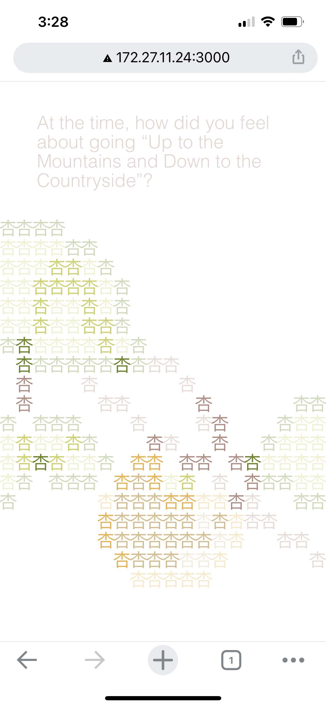
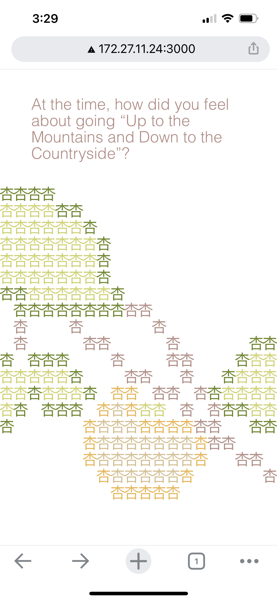
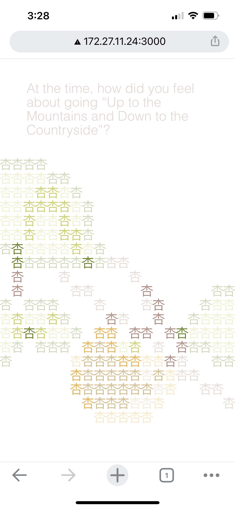
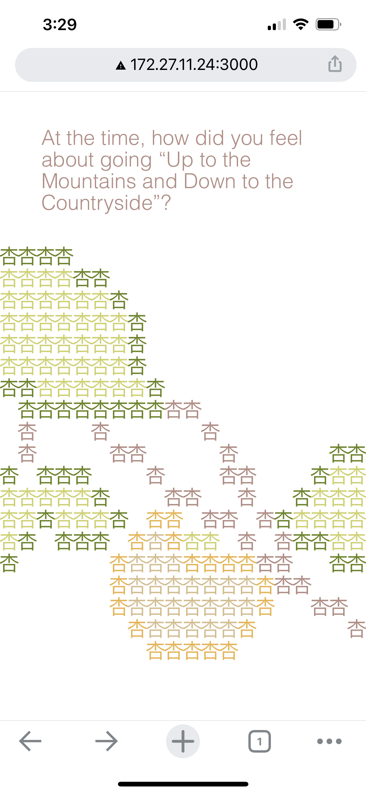

tracing website installation
This project pairs my experience visiting the Yale Farm with my mother's adolescent experience being sent down to a farm in China in the 1970s as part of the nationwide “Up to the Mountains, Down to the Countryside” movement. This movement mobilized around 17 million “sent-down” youth from the 1950s into the late 1970 with the stated purpose of educating them amongst the peasantry, but really ended up burdening the peasants and exiling the youth from their homes, sometimes for life.
The central gesture and concept of this project is the action of tracing. For me, tracing embodies the attempt to imagine and recreate a memory. In this project, tracing activates the spoken memories of my mother and I across two devices. On the phone, Chinese characters compose the shapes of the crops I handled while on the Yale Farm. When a user traces them with their finger, the phone plays audio of my own voice, speaking in English about my experience on the Yale Farm. At the same time, the action of tracing also activates audio on the accompanying tablet device, in which my mother recounts her experience on her farm in Chinese. On the tablet, her Chinese audio is visually accompanied by propaganda photographs depicting sent-down youth.
Major features of the site include: audio that plays and pauses with the tracing of onscreen images; real-time communication and syncing between the two websites across two devices using node.js and sockets; and binaural and bilingual audio (the English audio on the phone plays in the right ear while the Chinese audio on the tablet plays in the left ear).
 


